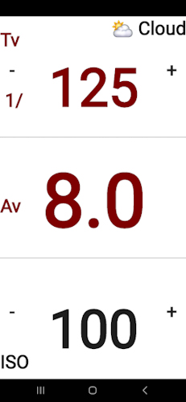
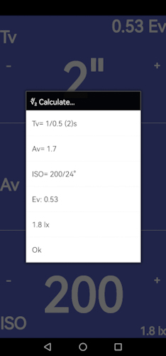
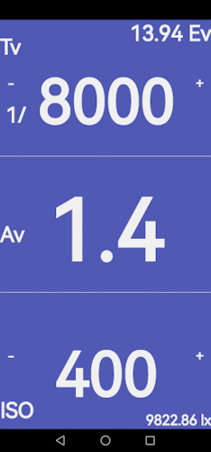

Android exposure calculator Lightvalues LV for calculating aperture values corresponding to light values1 by shifting the time value or arithmetic speed value in steps according to the common classification, where
and
Therefore is calculated from or by
with
The shutter speed is set in the range between and 2 hours , aperture ranges from to and speed is set to range between ISO 0.4 and ISO 102400. On aperture, shutter speed and exposure see e.g. Roberts (1995), Beaver (2018), Bernacki (2020) and Simon et al. (2022).
Logarithmic speed (s. Allbright, 1991) is transformed from arithmetic speed by
The exposure value is calculated from and , where
The total luminous flux or illuminance in lux , where results from and by
For logarithmic functions in general see e.g. Marsden and Weinstein (1985), Howie (2001) and Sobot (2021).
Presets for time and aperture combinations at ISO 100/21° (8) are given (s. Tab. 1), with aperture values are rounded to one decimal place. Custom time-aperture-ISO combinations for exposure values (10) or illuminance (11) can be achieved by shifting itself (c.f. Fig. 1).
Figure 1. Screenshots from LV application.

Table 1. Exposure presets for , and (10) at ISO 100/21° by condition cnd.
cnd Tv Av Ev
Sun 125 11 14
Cloud 125 8 13
Overcast 60 5.6 11
Dawn 15 4 8
Indoors 15 2.8 7
In addition, direct calculations (5) of aperture from shutter speed (6) and (7) can be performed (c.f. Schrausser, 2025). This should be used when shutter speeds outside the usual steps (1) (2) are present or when only a single shutter speed is available, as in the case of the so-called mechanical emergency shutter speed (s. Fig. 2, Tab. 2).
Figure 2. Screenshots from LV application.
 
Table 2. for (5) (6) at ISO 100/21° and ISO 400/27° with (10) by condition cnd.
cnd Tv Ev
250 100 60 45
ISO 100/21°
Sun 7.8 12.3 15.9 18.3 13.9
Cloud 5.7 9.0 11.6 13.3 13.0
Overcast 2.8 4.3 5.6 6.5 10.9
Dawn 1.0 1.6 2.0 2.3 7.9
Indoors 0.7 1.1 1.4 1.6 6.9
ISO 400/27°
Sun 15.6 24.6 32.0 36.7 15.9
Cloud 11.4 18.0 23.2 26.6 15.0
Overcast 5.6 8.6 11.2 13.0 12.9
Dawn 2.0 3.1 4.0 4.6 9.9
Indoors 1.4 2.2 2.8 3.2 8.9
Further manuals or introductory literature on photography are given by e.g. Hedgecoe (1977, 2009) and Jacobson et al. (2000), see also Kenneth Mees (1931), Cannon and Hunt (1981), Hitchcock (1989), Current et al. (2000), Friedman and Ross (2003) or Pavlidis (2022).
1: Light level for incident or reflected light on a logarithmic scale.
Allbright, G. S. (1991). Emulsion Speed Rating Systems. The Journal of Photographic Science 39 (2): 95–99. https://doi.org/10.1080/00223638.1991.11737126
Beaver, J. (2018). Shutter Speed and Aperture. In The Physics and Art of Photography, 2:3-1 to 3-6. 2053-2571. Morgan & Claypool Publishers. https://doi.org/10.1088/2053-2571/aae504ch3
Bernacki, J. (2020). Automatic Exposure Algorithms for Digital Photography. Multimedia Tools and Applications 79 (19): 12751–76. https://doi.org/10.1007/s11042-019-08318-1
Cannon, T. M., & Hunt, B. R. (1981). Image Processing by Computer. Scientific American 245 (4): 214–25. http://www.jstor.org/stable/24964586
Current, I., Compton, J. C., & Zakia, R. D. (2000). Basic Photographic Materials and Processes. Amsterdam: Elsevier Science; Technology. https://books.google.com/books?id=maKozwEACAAJ
Friedman, A., & Ross, D. S. (2003). Mathematical Models in Photographic Science. Berlin, Heidelberg: Springer. https://doi.org/10.1007/978-3-642-55755-2
Hedgecoe, J. (1977). The Photographer’s Handbook: A Complete Reference Manual of Techniques, Procedures, Equipment and Style. 1st ed. New York: Knopf. https://books.google.com/books?id=eyXrAAAAMAAJ
———. (2009). New Manual of Photography. London: Dorling Kindersley Limited. https://books.google.com/books?id=9N4C0HMzZFMC
Hitchcock, M. (1989). Field Photography; a Guide to Basic Equipment. Journal of Museum Ethnography, no. 1: 4–6. http://www.jstor.org/stable/40793474
Howie, J. M. (2001). The Logarithmic and Exponential Functions. In Real Analysis, 165–79. London: Springer. https://doi.org/10.1007/978-1-4471-0341-7_6
Jacobson, R., Ray, S., Attridge, G. G., & Axford, N. (2000). Manual of Photography. 9th ed. Oxfordshire, UK: Routledge. https://doi.org/10.4324/9780080510965
Kenneth Mees, C. E. (1931). The Science of Photography. Sigma Xi Quarterly 19 (1): 1–19. http://www.jstor.org/stable/27824446
Marsden, J., & Weinstein, A. (1985). Exponentials and Logarithms. In Calculus i, 307–35. New York, NY: Springer. https://doi.org/10.1007/978-1-4612-5024-1_9
Pavlidis, G. (2022). Foundations of Photography: A Treatise on the Technical Aspects of Digital Photography. Cham: Springer International Publishing. https://doi.org/10.1007/978-3-031-06252-0
Roberts, G. (1995). Exposure. In Mastering Photography, 76–87. London: Macmillan Education UK. https://doi.org/10.1007/978-1-349-13506-6_5
Schrausser, D. G. (2025). Schrausser/HP_Prime_MATH: 3.0. Zenodo. June 2025. https://doi.org/10.5281/zenodo.14721085
Simon, G., Vakulya, G., & Rátosi, M. (2022). The Way to Modern Shutter Speed Measurement Methods: A Historical Overview. Sensors 22 (5): 1871. https://doi.org/10.3390/s22051871
Sobot, R. (2021). Exponential and Logarithmic Functions. In Engineering Mathematics by Example, 51–66. Cham: Springer International Publishing. https://doi.org/10.1007/978-3-030-79545-0_4
LV
Dietmar Gerald Schrausser15.07.2025